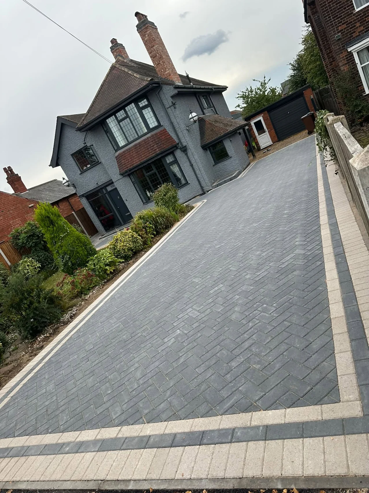

WARD DRIVEWAYS · NOTTINGHAM
See the work.
Picture the possibilities.
A closer look at completed driveway and paving projects.
OUR PROJECTS
The Ward Driveways gallery.
Select a photograph to enlarge it.
ON LOCATION
Take a closer look.
Two project walkthroughs from Ward Driveways.
FREE, NO-OBLIGATION QUOTE
Let’s talk about your outdoor space.
Tell us what you have in mind. This form opens a WhatsApp draft with all your details, ready for you to review, add photos and send.